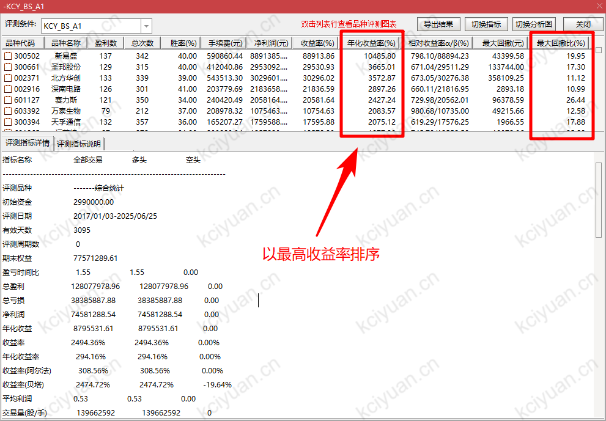
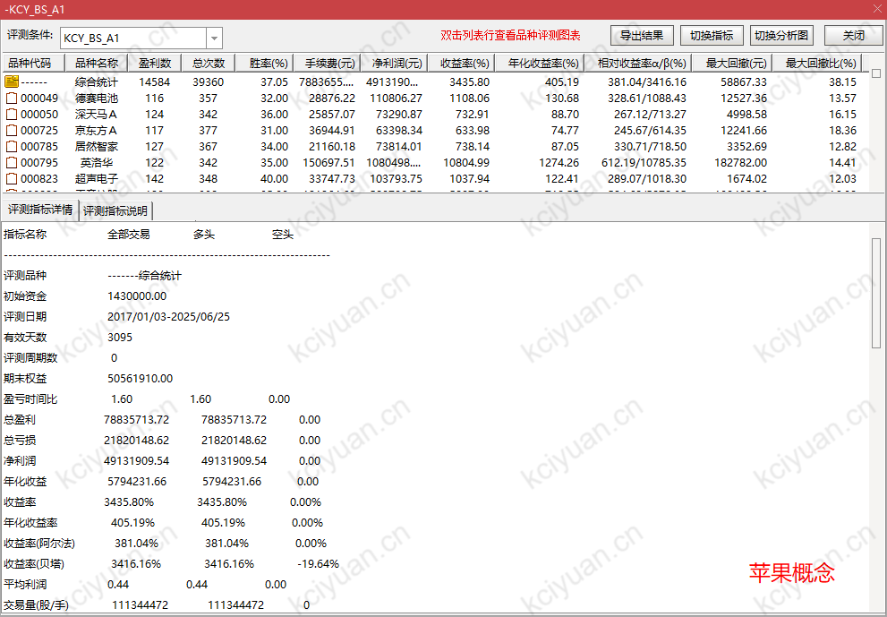

认真阅读全篇需要10分钟，但是会 改变你的交易生涯 ，你愿意吗？
说，我愿意！开始！
如果你还在交易的不确定性中苦苦挣扎，甚至依然在亏损？
继续学习和训练是必要的，但是，并不妨碍你通过 外力的帮助 先获得盈利。
首先阐明：技术指标是操盘术，是用来托底和拉高上限的，最终的盈利多寡，在于你交易的标的。 （就比如我穿越回到十年前，告诉你比特币会翻几百万倍，如果没有成熟的交易能力，你依然不会赚到，甚至会在期间反复的拉扯中巨额亏损。反之，对于拥有成熟交易能力的投机者，在得到预判的情况下，却能盈利远超它本身的涨势。）
我们的 「K次元 - B(买点)S(卖点) 指标系统」 通过精心设计的回测，在「沪深300」近10年的行情上取得 294%超高年收益率 ，同时 回撤风险极低 ，是我自己来说见过唯一达到这个能力的。敢这么说，在于本人研究技术分析十多年（以选股为逻辑的量化策略也做过很多），手工一根根K线测试的、写代码跑程序测试的，各种策略，数以万计，现在我基本上光听描述都大概能知道某种技术会有什么表现。
以下就简单截图展示。 （待各位入群拿到指标安装到软件后，尽可以自己做更多时间段的、不同指数成份股的、不同板块/概念股的回测，也能自己实盘中对比以证虚实 （如何判断是否隐含未来数据：盘中截图对比，如果有未来数据前一日的指标都会飘忽不定） 。并且通过这些回测，各位还能找到一些选股的秘密！）
首先是对通达信上测评系统的必要设置， 也就是我上面说过的“精心设计的回测”， 为什么呢？ 如果不按照我的这个严苛的设计，其回测结果与实盘基本不沾边，这也是为什么大多数人明明回测很厉害，一到实盘就翻车的原因。在我的这个设置下，那些均线、MACD等常规技术全军覆没。
👇 设置1：做回测的时候一定要选“后复权”，否则股价本身就隐含“未来”
👇 设置1：做回测的时候一定要选“后复权”，否则股价本身就隐含“未来”

👇 设置2：测评时间段一定要包含完整的一个牛熊周期。（但是时间也不能太早远，因为指数本身的成分股变化会太大）

👇 设置3：合理的手续费这个默认的就行区别不大。 而最最重要的是 ，介入价位，一定要选「次周期」的。
这个设置也就是说，在指标发生信号后的第二天才进行买入或卖出，为什么呢？因为在实盘中，当天盘中的信号在没有收盘前是会变化的！！！我这里选“次周期中价”，其实选开盘/收盘价都差不多。（为什么选次周期？因为实盘中的信号是盘中变化的，如果不选次周期，则可能当天买入后，当天就卖出，这样就无法获得第二天的收益。）

👇 设置4：平仓条件，略过不选，我们使用指标系统中的卖出信号平仓。

👇 好，下面就是选择的「沪深300」成分股进行测试。

👇 测试结果如图。除了超高的收益率，还请关注两个点：
- 胜率：36%（有经验的朋友可以看出本策略的核心价值观吧）
- 最大回撤：39%（即在这整个交易生涯中，资金从最高点回落点程度。并且，通达信的测评结果中这个数字并不是综合平均值，它只是个股中回撤幅度最大的那个，实际综合平均值是16% ）

👇 以最高收益排序，对于有大行情的标的，我们的指标的操盘能力，抓取利润的能力，是多么的恐怖和无敌！
就此进一步说明 指标实际运用方法论：

- 要知道我们回测可以跑整个指数或板块的成分股，但是实盘中个人的能力只能交易至多几个，所以，8年翻25倍的回测能力，与你的实际盈利并不划等号！你可能是超高几十倍！也可能，只是跑赢大盘。
- 也就是回到我们开头那句话：技术指标是操盘术，是用来托底和拉高上限的，最终的盈利多寡，在于你交易的标的。
- 所以，拿到指标后，效果是，你可以终结对技术分析的研究了，你拥有了对操盘能力的某种确定性！
- 接下来，你可以尽情研究选好股，甚至某些简单粗暴的选股策略都能运用上来取得很好的成绩！
👇 双击个股可以展开查看它的整个交易记录。

👇 如图，以最低收益率排序，体现的是我们的指标的托底的能力，甚至在最差的行情它也能保本！

👇 双击个股可以展开查看它的整个交易记录。

👇 测评「创业300」

👇 测评「央企100」

👇 测评「5G概念股」

👇 测评「苹果概念股」

👇 测评「通达信热股」。这个要注意了，特意做了一个反例：
- 警惕！测评系统中提供的指数/板块，其中成分股短期内变化是比较大的。
- 例如这个「通达信热股」，我们的回测时间段是2017年至2025年，但是现在回测，它提供的是最新更新的涨幅已经很大的股票，那么必然会得到一个非常好的数据！（相当于筛选了已经大涨的股票进行回测）
- 所以，选择「沪深300」或其他一些长期相对变化不大的指数（并且注意时间跨度的问题）为测试基准是必要的！

👇 测评「中证龙头」

👇 测评「在线消费概念股」

👇 测评「沪深300」的周线。看看本指标的跨周期能力！并且注意，我们的指标是没有调参数的！主要基于逻辑设计，不需要反复调整参数，避免陷入更多的不确定性中。
但是周线为什么收益率低了这么多呢？留一题，各位思考。
👇 一张图展示，本指标在实盘中，如何运用。
步骤如图中的 1、2（买入）3、4（卖出）。
当你选定标的，贵在坚持！
（技巧：买卖日出现时，资金分批操作，把成本控制在当日分时线的均线附近即可，避免追高或抄底。）

💰💰💰 本站强力出品，首批用户招募中，后期仅在封闭群中分发！
定价：120元/月。入群门票599元（封闭后不再对外），赠送1个月体验。
扫码加入（ 申请时请备注：kcy_bs_a1 ） 👇